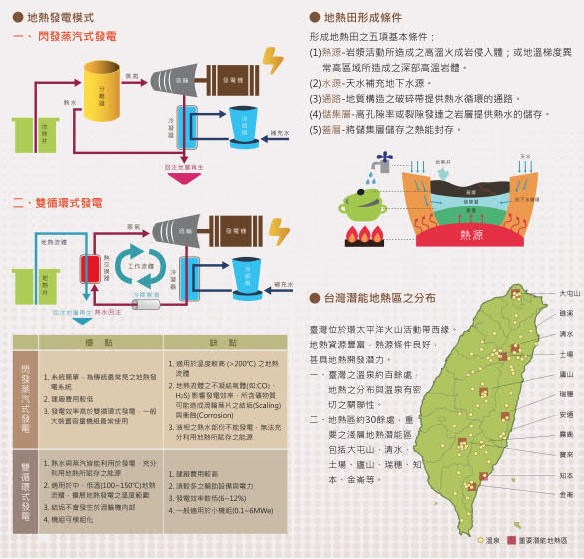

台東地熱公民電廠

我們結合台東金峰鄉嘉蘭部落，推動社區型地熱開發，透過公民集資，保障部落參與權益，創造在地就業機會，鼓勵青年返鄉，並讓更多部落孩子獲得被重視與教育資源。
地熱開發亮點
- 嘉蘭地熱井井溫 204.7°C
- 預估潛力 6MW，首階段規劃 2MW
- 集資計畫開放，部落優先分潤
- 結合學術單位，推動永續發展

我們結合台東金峰鄉嘉蘭部落，推動社區型地熱開發，透過公民集資，保障部落參與權益，創造在地就業機會，鼓勵青年返鄉，並讓更多部落孩子獲得被重視與教育資源。